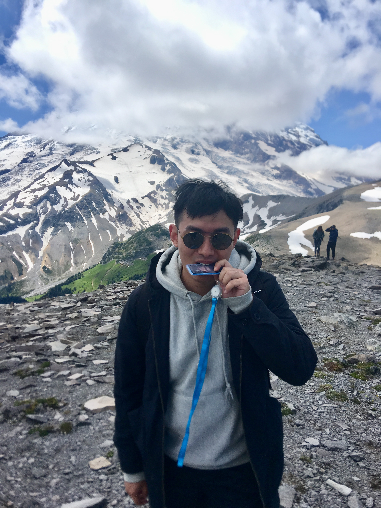
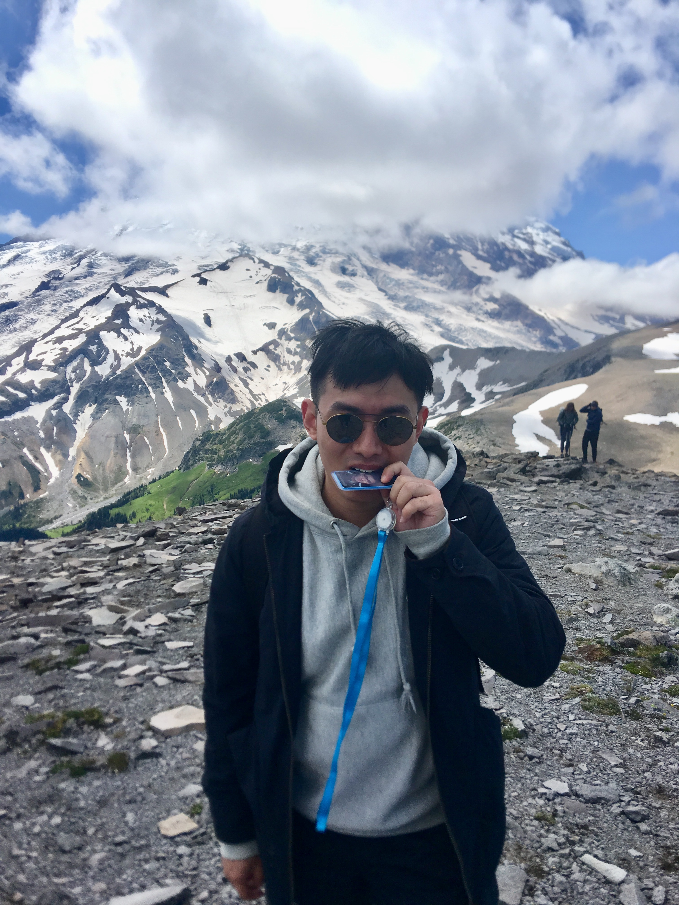

Yiming Peng
![]() Seattle · WA
Seattle · WA
ymp.sea AT gmail DOT com
|
 |
Yiming Peng
ymp.sea AT gmail DOT com |
About MeHello. I am Yiming, a Seattle Amazonian. My focus is on large-scale distributed platform and cloud computing. In my free time. My interests widespread from tech, nature to geography, humanities. I am a meditator, also an apprentice. I grow up in a city surrounded by hundreds of lakes and sits Yangtze, the longest river in Asia and 3rd-longest in the world. I enjoy urban life, the streets and alleys. Hometown's big rivers and big lakes make me broad-minded and inclusive. I believe in making difference and practice in person. I am grateful for all challenges on my growth path, from which I learnt persistence and perseverance important. I am motivated by breathtaking adventures and intoxicated exploring unlimited possibilities. I tried skydiving over Pacific Ocean, hovering around volcanoes, hiking on Mt. Rainier, chasing aurora in Alaska, watching Galaxy in Jasper and keep doing such things. I drive a forester in the city. I have a taylor made in walnut. Btw, I love poem and dogs. Experience
Software Development Engineer. Amazon Alexa, Seattle, WA, United States. March, 2019 - Present.
Software Development Engineer. Amazon Web Services, Inc., Seattle, WA, United States. Pi Day, 2016 - March, 2019.
Summer Intern. Luculent Software Co., Ltd., Nanjing, Jiangsu, China. June - August, 2011.
Education
M.S. in Computer Engineering. University of Massachusetts Amherst, MA, United States. September, 2013 - December, 2015.
B.S. in Communication Engineering. Wuhan University of Technology, Wuhan, Hubei, China. September, 2009 - June, 2013.
Honors and AwardsTop Tier Fellowship Student, Wuhan University of Technology Outstanding Student Cadre, Wuhan University of Technology |